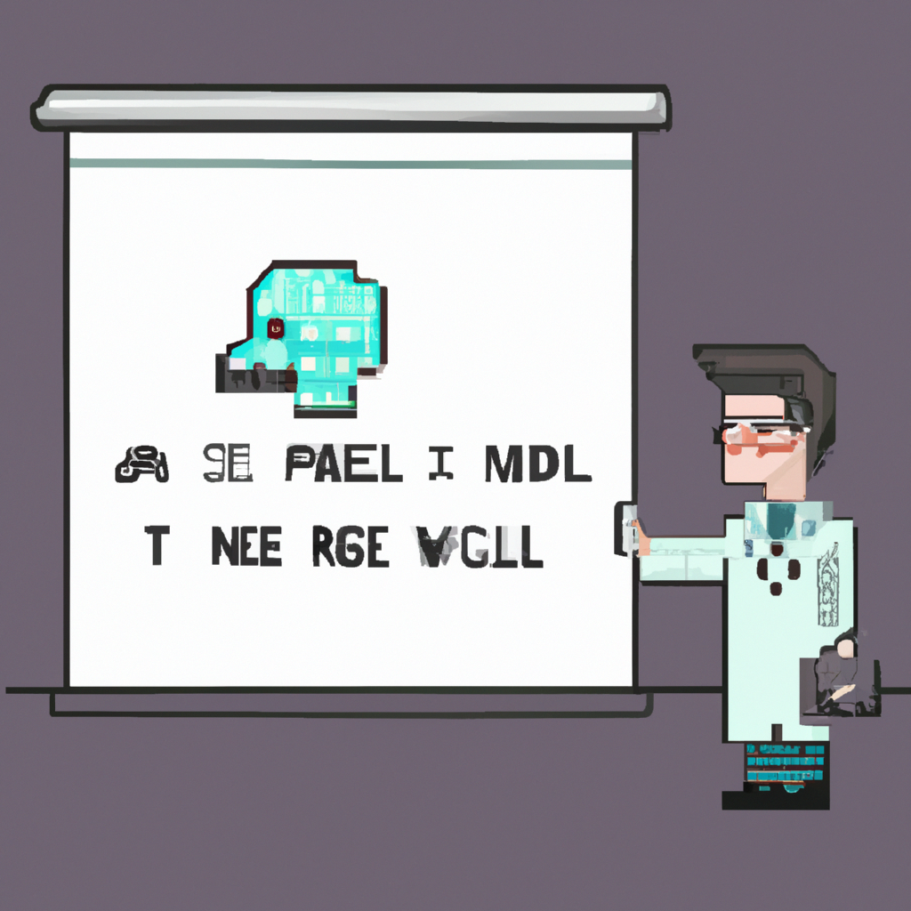

Why AI will never replace the radiologist
Recently, there has been a lot of buzz about machine-learning and artificial intelligence (AI) being able to replace radiologists in performing medical imaging analysis. While AI certainly has the potential to speed up the process of medical imaging analysis, there are some downsides that should be taken into consideration before fully replacing radiologists with AI technology.
Firstly, AI is only as good as the data that it is given. In order to accurately interpret medical images, AI needs to be trained on large datasets of medical images. This means that AI is limited in its capabilities and may not be able to interpret medical images accurately if the dataset it was trained on is low-quality or incomplete.
Secondly, AI can only interpret medical images with what it has been “trained” to recognize. This means that AI can only detect what it has been programmed to detect, and may miss other abnormalities or issues. This is a problem that is unique to medical imaging, as medical images can be very complex.
Lastly, AI can be biased, just like humans. For example, AI may be biased towards certain types of medical images, such as those from certain countries or hospitals. This can lead to inaccurate interpretations of medical images, which can have serious consequences.
In conclusion, while AI may be able to speed up the process of medical imaging analysis, it will never be able to replace the radiologist. AI can be limited in its capabilities, and it can be biased towards certain types of medical images. For these reasons, it is important to consider the limitations of AI when using it for medical imaging analysis.